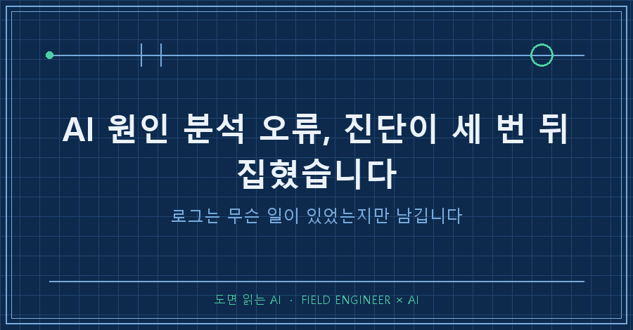
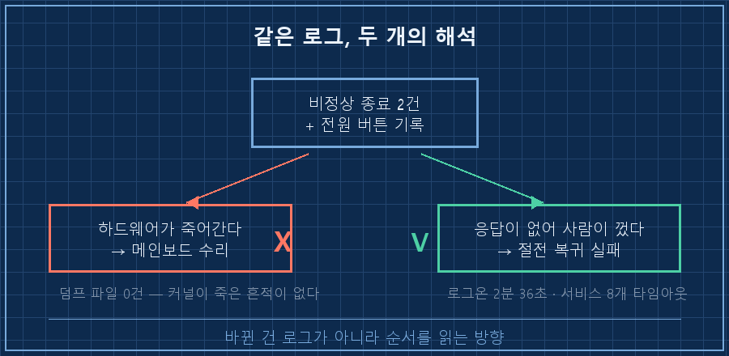
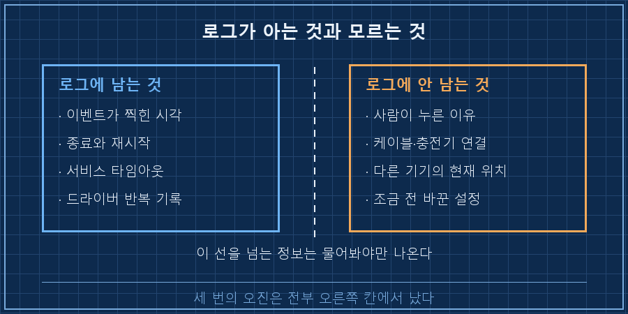
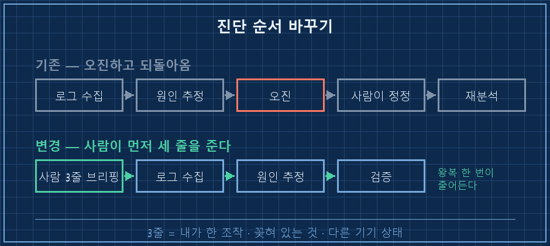

"그거 제가 껐는데요."
이 한마디에 진단서 절반이 날아갔습니다.
AI 원인 분석 오류는 아무 데서나 나지 않아요. 나는 자리가 대체로 정해져 있습니다. 로그에 남은 결과만 가지고 원인을 지어내는 자리예요. 기계 로그는 무슨 일이 있었는지는 남기지만, 왜 그랬는지는 안 남겨요. 그래서 사람이 세 가지를 먼저 말해줘야 합니다. 내가 방금 뭘 했는지, 기계에 뭐가 꽂혀 있는지, 같이 쓰는 다른 기기는 지금 어디 있는지.
2026년 9월, 집에 켜두고 밖에서 원격으로 쓰는 노트북이 계속 말썽이었어요. 원인을 AI한테 전수로 캐게 시켰는데, 그 과정에서 진단이 세 번 뒤집혔습니다. 세 번 다 뒤집은 건 새로 찾은 로그가 아니라 제 한마디였고요.
15년째 현장에서 제어 설비를 봅니다. 고장 원인 찾는 게 일의 절반인데, 현장도 똑같아요. 계기판 숫자보다 "아까 제가 이거 한 번 눌러봤는데요" 하는 한마디가 훨씬 빠를 때가 많습니다.
1. 첫 진단은 "하드웨어가 죽어간다"였어요
시작은 비정상 종료 기록이었습니다. 이벤트 로그에 예기치 않은 종료가 두 건 찍혀 있었어요. (기기 정보는 지우고 옮겼습니다)
기록 1 비정상 종료 (Kernel-Power 41) 13:14
기록 2 비정상 종료 (Kernel-Power 41) 17:07
메모리 덤프 파일 : 없음
미니덤프 폴더 : 비어 있음1차 판단은 "전원부나 메인보드 이상 의심"이었습니다. 저도 그 화면 보고 수리를 알아볼 뻔했어요.
그런데 걸리는 게 있었습니다. 커널이 진짜로 죽으면 덤프 파일이 남거든요. 그게 하나도 없었어요..
그래서 제가 말했습니다. 그날 두 번 다 화면이 안 들어오고 원격도 안 붙어서, 제가 전원 버튼을 길게 눌러 껐다고요.
더 웃긴 건 그 흔적이 로그에도 이미 있었다는 점이에요. 전원 버튼 흔적이 13시 14분, 17시 07분에 정확히 찍혀 있었습니다. 다만 AI는 그걸 "고장이 나서 그 뒤에 벌어진 일"로 읽었어요. 순서만 바꿔 읽으면 정반대가 됩니다. 고장 나서 꺼진 게 아니라, 응답이 없어서 제가 끌 수밖에 없었던 거예요.
진단이 뒤집히자 범인도 바뀌었습니다. 하드웨어가 아니라 절전에서 복귀하는 과정이 문제였어요. 로그를 다시 보니 깨어난 뒤에 이런 일이 벌어지고 있었습니다.
12:50:36 사용자 서비스 8개가 동시에 30초 타임아웃
12:52:37 로그온 성공 — 2분 36초 걸림 (정상은 몇 초)
12:53:33 응답 없음. 전원 버튼 길게 누름
2. 두 번째는 쓰지도 않는 장치를 범인으로 지목했습니다
다음으로 눈에 띈 건 로그를 미친 듯이 쏟아내는 드라이버였어요. 썬더볼트 관련 드라이버였는데, 1.4초에 한 번꼴로 같은 줄을 찍고 있었습니다.
발생 구간 7일
누적 건수 80,993 건
시스템 로그 점유율 99.5 %
결과 그 이전 기록은 전부 밀려나 사라짐이게 왜 중요하냐면, 정작 필요한 증거가 이것 때문에 다 지워졌거든요. 강제 종료 직전 로그를 보려고 했더니 이미 없었습니다. 로그 도배는 그냥 시끄러운 게 아니라 증거를 파괴합니다.
AI 판단은 "연결된 썬더볼트 장치를 분리해보라"였어요. 합리적으로 들리죠. 저는 이렇게 답했습니다. 썬더볼트는 쓰지도 않는다고. 뭘 꽂아본 적이 없다고요.
그런데 말하면서 하나가 떠올랐어요. 이 노트북 전원 코드가 USB-C입니다.
그게 답이었습니다! 요즘 노트북은 충전 포트가 곧 썬더볼트 포트인 경우가 많아요. 장치를 안 꽂아도, 충전기만 꽂아도 드라이버가 그 포트를 계속 관리합니다. 로그만 보면 영원히 "장치 연결 문제"로 보이는데, 실제로는 책상 위에 충전기 하나 꽂혀 있는 게 전부였어요.
이건 로그에 절대 안 남는 정보입니다. 지금 이 기계에 물리적으로 뭐가 붙어 있는지는 사람 눈에만 보여요.

3. 세 번째는 AI가 자기 탓을 했어요
마지막이 제일 재밌습니다. 원격으로 작업하던 중에 접속이 뚝 끊겼어요.
바로 직전에 한 일이 공유기 설정 정리였거든요. 그러니 결론은 자동으로 나왔습니다. "방금 지운 설정 때문에 제가 접속을 끊어버렸다." 자백 모드로 들어간 거죠.
그런데 경로를 실측해보니 이렇게 나왔습니다.
끊기기 전 : 직통 연결 왕복 1ms ← 집 안 같은 공유기
끊긴 뒤 : 직통 연결 왕복 8ms ← 집 밖 외부망연결은 살아 있었어요. 다만 접속하던 쪽 노트북이 집 와이파이를 떠난 것이었습니다. 제가 밖으로 들고 나간 그 노트북이요. 집 안에서 직통으로 맺혀 있던 접속이니, 망이 바뀌면 그 자리에서 끊어지는 게 당연했어요.
설정 삭제 직후에 확인했던 기록에는 세션이 멀쩡히 살아 있었습니다. 증거가 이미 있었는데도 직전 행위가 범인처럼 보였던 거예요. 사람도 똑같이 합니다. 뭔가 고장 나면 "내가 아까 뭐 건드렸지" 부터 떠올리잖아요. AI도 그 버릇을 그대로 배웠더라고요..
4. 그래서 진단 순서를 바꿨습니다
세 번 다 같은 모양이었어요. 로그는 정확했고, 해석이 틀렸습니다. 그리고 틀린 자리는 전부 로그가 알 수 없는 영역이었어요.
그래서 이제는 원인 분석을 시키기 전에 세 줄을 먼저 적어줍니다.
① 최근 24시간 안에 내가 직접 한 조작 :
② 지금 기계에 꽂혀 있는 것 :
③ 같이 쓰는 다른 기기의 상태·위치 :30초면 씁니다. 이 세 줄이 없으면 로그만 보고 시작하니까, 없는 사실을 채워 넣게 돼요. 저는 이걸 세 번 깨지고 나서야 붙였습니다..
| 로그가 아는 것 | 로그가 모르는 것 | 안 물어보면 생기는 일 |
|---|---|---|
| 언제 무슨 일이 있었나 | 사람이 왜 그랬나 | 강제 종료를 고장으로 읽음 |
| 어떤 드라이버가 반복되나 | 뭐가 꽂혀 있나 | 쓰지도 않는 장치를 의심 |
| 연결이 끊겼나 | 상대 기기가 어디 있나 | 직전 작업을 범인으로 지목 |
여러분도 AI한테 "이거 왜 이래?" 하고 로그만 던져본 적 있으시죠? 저는 그날 이후로 로그보다 세 줄을 먼저 붙입니다.

하나 더 있어요. 진단을 시작할 때 로그 저장 용량부터 키우는 것. 저는 이 건에서 필요한 기록을 이미 잃은 다음에야 용량을 20MB에서 256MB로 올렸습니다. 순서가 반대였죠.
이건 자주 물어보시더라고요
Q. 로그를 통째로 다 주면 알아서 찾지 않나요?
양이 많아질수록 반대가 되기 쉬워요. 이번에도 로그의 99.5%가 같은 드라이버 한 줄이었습니다. 그 더미 안에서 "덤프가 없다"는 사실을 알아채는 게 진짜 단서였는데, 그건 없는 걸 발견하는 일이라 양으로 해결이 안 돼요.
Q. 그럼 AI 원인 분석은 못 믿는 건가요?
반대예요. 여덟 시간 걸릴 로그 정리를 몇 분에 해주는 건 사람이 못 따라갑니다. 다만 결론 문장은 가설로 받고, 그 가설이 내가 아는 사실과 충돌하는지만 봐요. 이번엔 세 번 다 그 충돌 지점에서 잡혔습니다.
기계 로그는 결과만 남기고 의도를 안 남깁니다. 그러니 물어보는 게 빠릅니다 — 이 문장을 그날 점검 기록 맨 아래에 적어뒀어요.
이 노트북 한 대에서 나온 원인이 아직 더 남아 있는데, 그 얘기는 makefield.ai에 시간순으로 풀어놨습니다. 로그 원문이 궁금하시면 거기 있어요.
태그: #AI원인분석오류 #AI진단틀릴때 #AI에게일시키기 #이벤트로그보는법 #KernelPower41 #컴퓨터갑자기꺼짐 #비정상종료원인 #원격접속끊김 #썬더볼트드라이버 #윈도우이벤트뷰어 #AI로PC점검 #AI사용법 #AI활용실전 #노트북고장진단 #도면읽는AI